#install.packages("tidytuesdayR")
library(ggplot2)
library(broom)
library(here)
library(tidyverse)
library(tidymodels)
library(gt)
library(stringr)
library(dplyr)
library(forcats)
library(skimr)
library(janitor)
library(scales)tidytuesday-exercise
Tidy Tuesday Exercise
Installing and loading packages:
LOading the Tidy Tuesday datset
#Loading dataset
tuesdata <- tidytuesdayR::tt_load('2025-04-08')
care_state <- tuesdata$care_state
saveRDS(care_state, file = here("tidytuesday-exercise", "data", "care_state.rds"))##Exploring the data
Getting an overview of the data
head(care_state)# A tibble: 6 × 8
state condition measure_id measure_name score footnote start_date end_date
<chr> <chr> <chr> <chr> <dbl> <chr> <date> <date>
1 AK Healthcare… HCP_COVID… Percentage … 7.3 <NA> 2024-01-01 2024-03-31
2 AK Healthcare… IMM_3 Healthcare … 80 <NA> 2023-10-01 2024-03-31
3 AK Emergency … OP_18b Average (me… 140 25, 26 2023-04-01 2024-03-31
4 AK Emergency … OP_18b_HI… Average tim… 157 25, 26 2023-04-01 2024-03-31
5 AK Emergency … OP_18b_LO… Average tim… 136 25, 26 2023-04-01 2024-03-31
6 AK Emergency … OP_18b_ME… Average tim… 136 25, 26 2023-04-01 2024-03-31skim(care_state)| Name | care_state |
| Number of rows | 1232 |
| Number of columns | 8 |
| _______________________ | |
| Column type frequency: | |
| character | 5 |
| Date | 2 |
| numeric | 1 |
| ________________________ | |
| Group variables | None |
Variable type: character
| skim_variable | n_missing | complete_rate | min | max | empty | n_unique | whitespace |
|---|---|---|---|---|---|---|---|
| state | 0 | 1.00 | 2 | 2 | 0 | 56 | 0 |
| condition | 0 | 1.00 | 11 | 35 | 0 | 6 | 0 |
| measure_id | 0 | 1.00 | 5 | 20 | 0 | 22 | 0 |
| measure_name | 0 | 1.00 | 26 | 172 | 0 | 21 | 0 |
| footnote | 168 | 0.86 | 1 | 6 | 0 | 3 | 0 |
Variable type: Date
| skim_variable | n_missing | complete_rate | min | max | median | n_unique |
|---|---|---|---|---|---|---|
| start_date | 0 | 1 | 2023-01-01 | 2024-01-01 | 2023-04-01 | 4 |
| end_date | 0 | 1 | 2023-12-31 | 2024-03-31 | 2024-03-31 | 2 |
Variable type: numeric
| skim_variable | n_missing | complete_rate | mean | sd | p0 | p25 | p50 | p75 | p100 | hist |
|---|---|---|---|---|---|---|---|---|---|---|
| score | 155 | 0.87 | 134.04 | 102.02 | 1 | 70 | 93 | 193 | 730 | ▇▃▁▁▁ |
summary(care_state) state condition measure_id measure_name
Length:1232 Length:1232 Length:1232 Length:1232
Class :character Class :character Class :character Class :character
Mode :character Mode :character Mode :character Mode :character
score footnote start_date end_date
Min. : 1 Length:1232 Min. :2023-01-01 Min. :2023-12-31
1st Qu.: 70 Class :character 1st Qu.:2023-04-01 1st Qu.:2024-03-31
Median : 93 Mode :character Median :2023-04-01 Median :2024-03-31
Mean :134 Mean :2023-04-05 Mean :2024-03-14
3rd Qu.:193 3rd Qu.:2023-04-01 3rd Qu.:2024-03-31
Max. :730 Max. :2024-01-01 Max. :2024-03-31
NA's :155 The dataset has 1232 rows, 8 columns. We know that we are dealing with data from multiple States (identified by the two letter code) and that the data is from broadly from 1 January 2023 to 31 December 2024. There are a lot of character variables in the data (state, condition, measure_id, measure_name and footnote, start and end dates, and the only true numeric data is the score. We see that there are a number of NA values in the dataset (155 NA values).
We will run the TidyTuesday cleaning code to clean names (removing camel cases).
We removed the steps for changing “Not available” into NA values and storing as numeric values since the column is already stored as numeric, and also removed the lubridate step since the data looks fine without that. Saving this as a new variable to keep the original data untouched further.
care_state_1 <- care_state|> janitor::clean_names()
skim(care_state_1)| Name | care_state_1 |
| Number of rows | 1232 |
| Number of columns | 8 |
| _______________________ | |
| Column type frequency: | |
| character | 5 |
| Date | 2 |
| numeric | 1 |
| ________________________ | |
| Group variables | None |
Variable type: character
| skim_variable | n_missing | complete_rate | min | max | empty | n_unique | whitespace |
|---|---|---|---|---|---|---|---|
| state | 0 | 1.00 | 2 | 2 | 0 | 56 | 0 |
| condition | 0 | 1.00 | 11 | 35 | 0 | 6 | 0 |
| measure_id | 0 | 1.00 | 5 | 20 | 0 | 22 | 0 |
| measure_name | 0 | 1.00 | 26 | 172 | 0 | 21 | 0 |
| footnote | 168 | 0.86 | 1 | 6 | 0 | 3 | 0 |
Variable type: Date
| skim_variable | n_missing | complete_rate | min | max | median | n_unique |
|---|---|---|---|---|---|---|
| start_date | 0 | 1 | 2023-01-01 | 2024-01-01 | 2023-04-01 | 4 |
| end_date | 0 | 1 | 2023-12-31 | 2024-03-31 | 2024-03-31 | 2 |
Variable type: numeric
| skim_variable | n_missing | complete_rate | mean | sd | p0 | p25 | p50 | p75 | p100 | hist |
|---|---|---|---|---|---|---|---|---|---|---|
| score | 155 | 0.87 | 134.04 | 102.02 | 1 | 70 | 93 | 193 | 730 | ▇▃▁▁▁ |
Checking where the NA values are:
# Check how many NA values there are by column
na_summary <- care_state_1 |> summarise(across(everything(), ~ sum(is.na(.)), .names = "na_{.col}"))
print(na_summary)# A tibble: 1 × 8
na_state na_condition na_measure_id na_measure_name na_score na_footnote
<int> <int> <int> <int> <int> <int>
1 0 0 0 0 155 168
# ℹ 2 more variables: na_start_date <int>, na_end_date <int>From the data dictionary we see that the footnote data has a variable “5” which indicates “Results are not available for this reporting period.” Thus we will remove all incidents that have this footnote since there is no information associated. We will then check to see how many NA values remain.
#Removing data values with footnote value=5
clean_state_cleaning <- care_state_1 |> filter(is.na(footnote) | footnote != "5")
na_summary1 <- clean_state_cleaning |> summarise(across(everything(), ~ sum(is.na(.)), .names = "na_{.col}"))
print(na_summary1) #checking summary of the na values by column# A tibble: 1 × 8
na_state na_condition na_measure_id na_measure_name na_score na_footnote
<int> <int> <int> <int> <int> <int>
1 0 0 0 0 27 168
# ℹ 2 more variables: na_start_date <int>, na_end_date <int>skim(clean_state_cleaning) #making sure that we didn't lose any unintended data| Name | clean_state_cleaning |
| Number of rows | 1104 |
| Number of columns | 8 |
| _______________________ | |
| Column type frequency: | |
| character | 5 |
| Date | 2 |
| numeric | 1 |
| ________________________ | |
| Group variables | None |
Variable type: character
| skim_variable | n_missing | complete_rate | min | max | empty | n_unique | whitespace |
|---|---|---|---|---|---|---|---|
| state | 0 | 1.00 | 2 | 2 | 0 | 52 | 0 |
| condition | 0 | 1.00 | 11 | 35 | 0 | 6 | 0 |
| measure_id | 0 | 1.00 | 5 | 20 | 0 | 22 | 0 |
| measure_name | 0 | 1.00 | 26 | 172 | 0 | 21 | 0 |
| footnote | 168 | 0.85 | 2 | 6 | 0 | 2 | 0 |
Variable type: Date
| skim_variable | n_missing | complete_rate | min | max | median | n_unique |
|---|---|---|---|---|---|---|
| start_date | 0 | 1 | 2023-01-01 | 2024-01-01 | 2023-04-01 | 4 |
| end_date | 0 | 1 | 2023-12-31 | 2024-03-31 | 2024-03-31 | 2 |
Variable type: numeric
| skim_variable | n_missing | complete_rate | mean | sd | p0 | p25 | p50 | p75 | p100 | hist |
|---|---|---|---|---|---|---|---|---|---|---|
| score | 27 | 0.98 | 134.04 | 102.02 | 1 | 70 | 93 | 193 | 730 | ▇▃▁▁▁ |
The footnote column still has 168 NA values. We got rid of many of the NA values from the score column, but still have 27 NA values in the score column. With only 27 values we will inspect them directly.
clean_state_cleaning |> filter(is.na(score)) # A tibble: 27 × 8
state condition measure_id measure_name score footnote start_date end_date
<chr> <chr> <chr> <chr> <dbl> <chr> <date> <date>
1 AK Emergency… OP_18b_VE… Average tim… NA 25, 26 2023-04-01 2024-03-31
2 AK Emergency… OP_18c_VE… Average tim… NA 25 2023-04-01 2024-03-31
3 DC Emergency… OP_18b_LO… Average tim… NA 25, 26 2023-04-01 2024-03-31
4 DC Emergency… OP_18c_LO… Average tim… NA 25 2023-04-01 2024-03-31
5 DE Emergency… OP_18b_LO… Average tim… NA 25, 26 2023-04-01 2024-03-31
6 DE Emergency… OP_18c_LO… Average tim… NA 25 2023-04-01 2024-03-31
7 MT Emergency… OP_18b_VE… Average tim… NA 25, 26 2023-04-01 2024-03-31
8 MT Emergency… OP_18c_VE… Average tim… NA 25 2023-04-01 2024-03-31
9 ND Emergency… OP_18b_HI… Average tim… NA 25, 26 2023-04-01 2024-03-31
10 ND Emergency… OP_18c_HI… Average tim… NA 25 2023-04-01 2024-03-31
# ℹ 17 more rowsFrom the visual inspection it seems that the NA values come from observations from different States, they are all from emergency department, seem to occur at minimum in pairs, and are all within the date ranges of 2023/04/01 - 2024/03/31 (a full year). Based on this we will assume that this are missing observations that were not reported or were lost in processing. We will remove the values from the dataset.
We will also remove the entire footnote column as it no longer contains information that serves value for us (needing to know about veterans, etc). We will check that this resolved our NA values and double check that we didnt accidentally lose data.
care_state_final <- clean_state_cleaning |> filter(!is.na(score)) # remove scores with NA as value
care_state_final <- clean_state_cleaning |> select(-footnote) #Remove footnote column
# Check how many NA values remain by column
na_summary3 <- care_state_final |> summarise(across(everything(), ~ sum(is.na(.)), .names = "na_{.col}"))
# View the NA summary
print(na_summary3)# A tibble: 1 × 7
na_state na_condition na_measure_id na_measure_name na_score na_start_date
<int> <int> <int> <int> <int> <int>
1 0 0 0 0 27 0
# ℹ 1 more variable: na_end_date <int>skim(care_state_final)| Name | care_state_final |
| Number of rows | 1104 |
| Number of columns | 7 |
| _______________________ | |
| Column type frequency: | |
| character | 4 |
| Date | 2 |
| numeric | 1 |
| ________________________ | |
| Group variables | None |
Variable type: character
| skim_variable | n_missing | complete_rate | min | max | empty | n_unique | whitespace |
|---|---|---|---|---|---|---|---|
| state | 0 | 1 | 2 | 2 | 0 | 52 | 0 |
| condition | 0 | 1 | 11 | 35 | 0 | 6 | 0 |
| measure_id | 0 | 1 | 5 | 20 | 0 | 22 | 0 |
| measure_name | 0 | 1 | 26 | 172 | 0 | 21 | 0 |
Variable type: Date
| skim_variable | n_missing | complete_rate | min | max | median | n_unique |
|---|---|---|---|---|---|---|
| start_date | 0 | 1 | 2023-01-01 | 2024-01-01 | 2023-04-01 | 4 |
| end_date | 0 | 1 | 2023-12-31 | 2024-03-31 | 2024-03-31 | 2 |
Variable type: numeric
| skim_variable | n_missing | complete_rate | mean | sd | p0 | p25 | p50 | p75 | p100 | hist |
|---|---|---|---|---|---|---|---|---|---|---|
| score | 27 | 0.98 | 134.04 | 102.02 | 1 | 70 | 93 | 193 | 730 | ▇▃▁▁▁ |
We are happy that we have removed the NA values and seem to have kept our important information.
We can see that the measure ID and name are the main variable used to differentiate observations. This defines what the outcome and allows us to assess what is actually being measured. However, there is a substantial mix of different measures and observations which make it difficult to assert anything in this current form. Therefore, we need to get an overview of how many different conditions there are and what they evaluate so we can decide what to focus on (the data dictionary tells us that there should be 22 Unique IDs and 21 unique names).
We will select the unique IDs and then get the corresponding name to help us understand what they are.
measure_lookup <- care_state_final |> select(measure_id, measure_name) |> distinct()
measure_lookup# A tibble: 22 × 2
measure_id measure_name
<chr> <chr>
1 HCP_COVID_19 Percentage of healthcare personnel who are up to date w…
2 IMM_3 Healthcare workers given influenza vaccination Higher p…
3 OP_18b Average (median) time patients spent in the emergency d…
4 OP_18b_HIGH_MIN Average time patients spent in the emergency department…
5 OP_18b_LOW_MIN Average time patients spent in the emergency department…
6 OP_18b_MEDIUM_MIN Average time patients spent in the emergency department…
7 OP_18b_VERY_HIGH_MIN Average time patients spent in the emergency department…
8 OP_18c Average (median) time patients spent in the emergency d…
9 OP_18c_HIGH_MIN Average time patients spent in the emergency department…
10 OP_18c_LOW_MIN Average time patients spent in the emergency department…
# ℹ 12 more rowsThere are a few different measures which we could focus on based on our question. So this is a good time to define our research question to define further analysis.
We will look into:
Do ER wait times differ across U.S. states, and are psychiatric visits associated with longer wait times compared to other visits?
Average time spent in emergency rooms (before leaving or being sent home) within hospitals within each State for psychiatric/mental health patients condition patients.
If psychiatric/mental health conditions, are associated with increased average time spent in emergency rooms.
hypotheses: H1 (State-Level Variation): There is meaningful variation in average ER wait times across states.
H2 (Psychiatric Visit Impact): Psychiatric ER visits are associated with longer wait times than general visits.
We will focus on the following measures for our analysis: - OP_18b - general ER wait time - (Average (median) time patients spent in the ER before leaving -either discharged or admitted.) - OP_18c - Psychiatric ER wait time - (Average (median) time psychiatric/mental health patients spent in the ER before leaving.) - OP_22 - Left Before Being Seen - (Percent of patients who left the ER before being seen by a medical professional). - OP_23 - Stroke Scan Within 45 Minutes - (Percent of stroke-symptom patients who got a brain scan within 45 minutes of arrival).
These are all related to wait time and ER efficiency which is out focus.
er_measures <- c("OP_18b", "OP_18c", "OP_22", "OP_23")
care_state_er <- care_state_final |>
filter(measure_id %in% er_measures) |>
mutate(is_psych = str_detect(measure_id, "OP_18c")) # TRUE if psychiatric ER measureFurther EDA of variables of interest:
histograms of the variables of interest and faceting the ER wait times by visit time (psych or not):
# Histogram for OP_18b (General ER wait time)
care_state_er |>
filter(measure_id == "OP_18b") |>
ggplot(aes(x = score)) +
geom_histogram(bins = 30, fill = "steelblue", color = "white") +
labs(
title = "Distribution of ER Wait Times (OP_18b)",
x = "Wait Time (minutes)",
y = "Count"
) +
theme_minimal()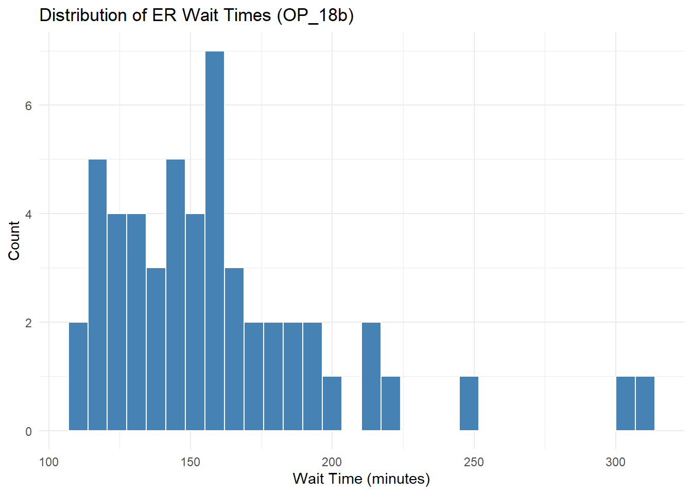
# Histogram for OP_18c (Psych ER wait time)
care_state_er |>
filter(measure_id == "OP_18c") |>
ggplot(aes(x = score)) +
geom_histogram(bins = 30, fill = "lightcoral", color = "white") +
labs(
title = "Distribution of Psychiatric ER Wait Times (OP_18c)",
x = "Wait Time (minutes)",
y = "Count"
) +
theme_minimal()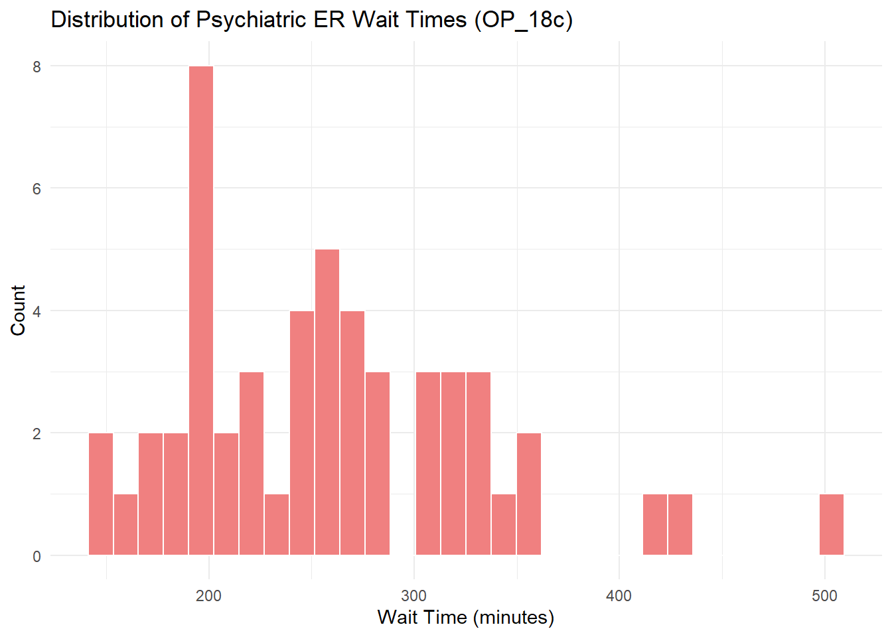
# Histogram for OP_22 (Left Before Being Seen)
care_state_er |>
filter(measure_id == "OP_22") |>
ggplot(aes(x = score)) +
geom_histogram(bins = 30, fill = "darkorange", color = "white") +
labs(
title = "Distribution of % Leaving Before Being Seen (OP_22)",
x = "Percent",
y = "Count"
) +
theme_minimal()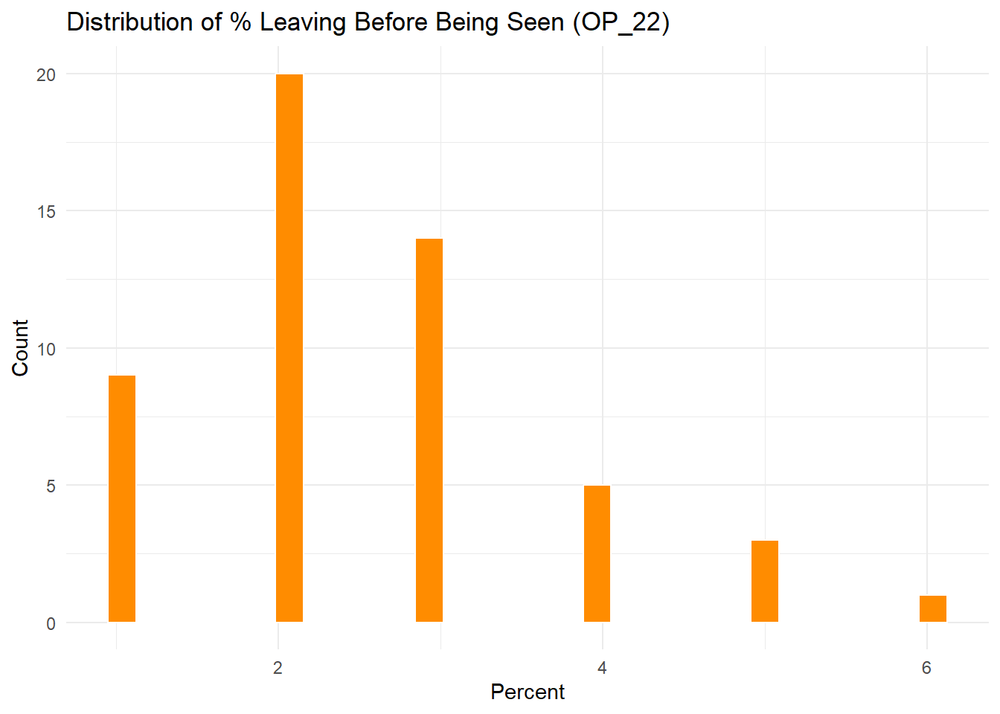
# Histogram for OP_23 (Stroke CT Scan Within 45 Minutes)
care_state_er |>
filter(measure_id == "OP_23") |>
ggplot(aes(x = score)) +
geom_histogram(bins = 30, fill = "darkgreen", color = "white") +
labs(
title = "Distribution of % Stroke Patients Scanned in 45 Min (OP_23)",
x = "Percent",
y = "Count"
) +
theme_minimal()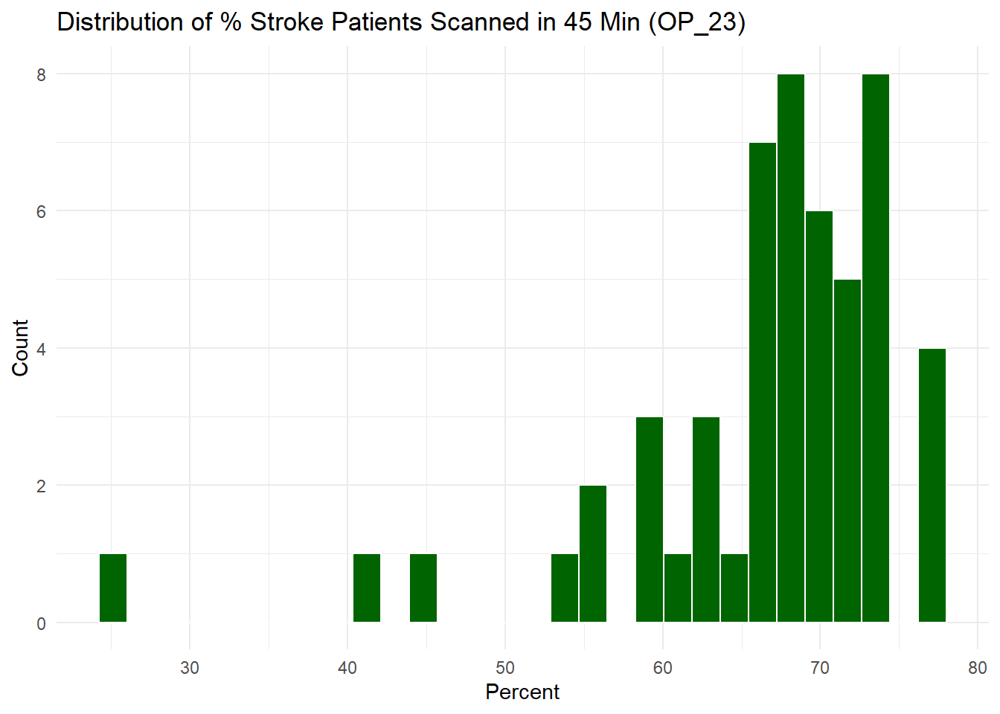
# Histogram of the score (ER wait time)
care_state_er |>
ggplot(aes(x = score)) +
geom_histogram(bins = 30, fill = "steelblue", color = "white") +
labs(
title = "Distribution of ER Wait Times",
x = "ER Wait Time (minutes)",
y = "Count"
) +
theme_minimal()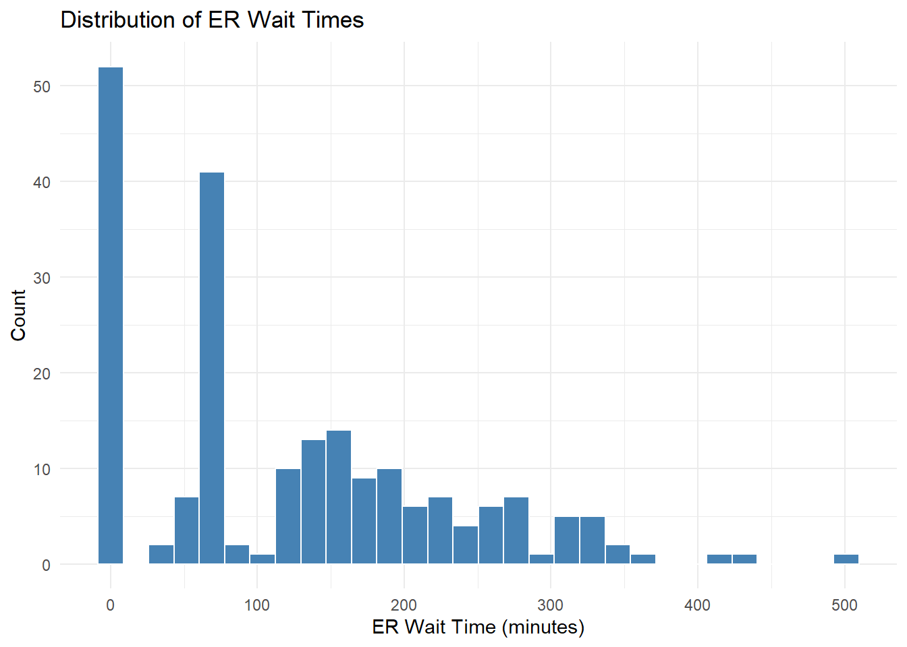
#Faceted Histogram by is_psych
care_state_er |>
ggplot(aes(x = score, fill = is_psych)) +
geom_histogram(bins = 30, alpha = 0.7, position = "identity") +
facet_wrap(~ is_psych, labeller = labeller(is_psych = c("FALSE" = "General", "TRUE" = "Psych"))) +
scale_fill_manual(values = c("TRUE" = "lightcoral", "FALSE" = "skyblue")) +
labs(
title = "Distribution of ER Wait Times by Visit Type",
x = "ER Wait Time (minutes)",
y = "Count"
) +
theme_minimal()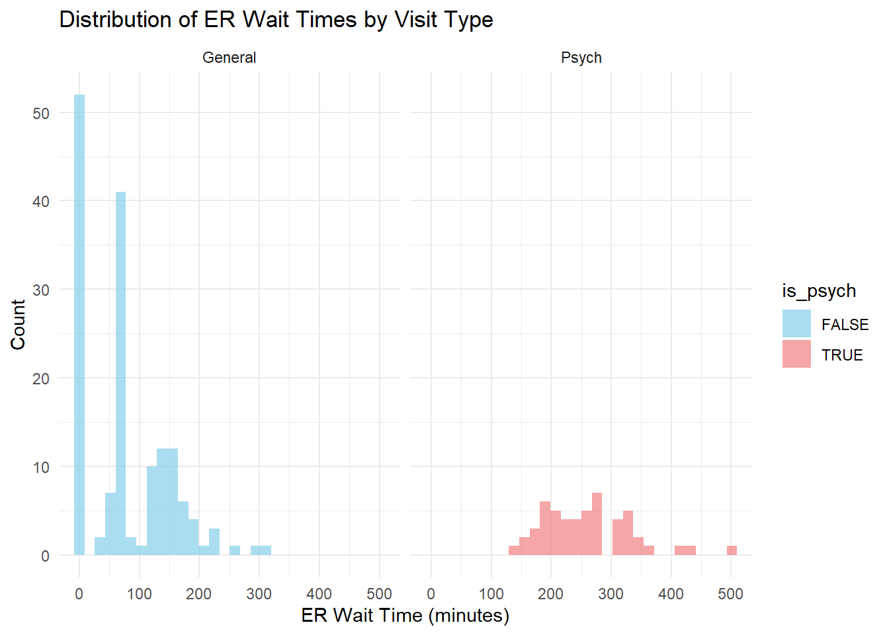
Distribution of ER wait times (OP_18b): General ER visits only. The distribution of general ER wait times is slightly right-skewed, with most values clustering between 120 and 180 minutes. A few higher values beyond 200–300 minutes suggest the presence of outliers or high-delay hospitals.
Distribution of Psychiatric ER wait times (OP_18c): Psychiatric/Mental Health ER visits. Psychiatric ER wait times are broadly distributed and right-skewed, with a long tail extending beyond 500 minutes. This indicates a higher degree of variability and more extreme delays in psychiatric care compared to general visits.
Distribution of Percentage of patients that left before being seen (OP_22): Histogram: Patient departure before consultation. The majority of hospitals report 2–3% of patients leaving before being seen, with a relatively narrow spread. This unimodal, slightly right-skewed distribution highlights a generally low but occasionally concerning departure rate.
Distribution of Percentage of Stroke Patients Scanned in 45 Minutes (OP_23): Histogram: Timeliness of critical stroke scans. The distribution is left-skewed, with most hospitals achieving scan rates between 60–75%. A few outliers with lower percentages indicate potential issues with timely stroke response in certain locations.
Overall Distribution of ER Wait Times (all types): Histogram: Combined OP_18b and OP_18c values. The combined distribution of ER wait times is multimodal and heavily right-skewed. A high concentration of values near 0 and a spread up to 500 minutes suggest possible data quality questions and a wide performance disparity across hospitals.
ER Wait Times by Visit Type (Faceted by is_psych): Histogram: General vs. Psychiatric visit times When faceted by visit type, general ER wait times are more tightly distributed with a peak near 150 minutes, while psychiatric visit times are spread wider with a central tendency around 250–300 minutes. This supports the hypothesis that psychiatric visits tend to result in longer ER stays.
# Summary of ER wait time (score)
skimr::skim(care_state_er)| Name | care_state_er |
| Number of rows | 208 |
| Number of columns | 8 |
| _______________________ | |
| Column type frequency: | |
| character | 4 |
| Date | 2 |
| logical | 1 |
| numeric | 1 |
| ________________________ | |
| Group variables | None |
Variable type: character
| skim_variable | n_missing | complete_rate | min | max | empty | n_unique | whitespace |
|---|---|---|---|---|---|---|---|
| state | 0 | 1 | 2 | 2 | 0 | 52 | 0 |
| condition | 0 | 1 | 20 | 20 | 0 | 1 | 0 |
| measure_id | 0 | 1 | 5 | 6 | 0 | 4 | 0 |
| measure_name | 0 | 1 | 103 | 171 | 0 | 4 | 0 |
Variable type: Date
| skim_variable | n_missing | complete_rate | min | max | median | n_unique |
|---|---|---|---|---|---|---|
| start_date | 0 | 1 | 2023-01-01 | 2023-04-01 | 2023-04-01 | 2 |
| end_date | 0 | 1 | 2023-12-31 | 2024-03-31 | 2024-03-31 | 2 |
Variable type: logical
| skim_variable | n_missing | complete_rate | mean | count |
|---|---|---|---|---|
| is_psych | 0 | 1 | 0.25 | FAL: 156, TRU: 52 |
Variable type: numeric
| skim_variable | n_missing | complete_rate | mean | sd | p0 | p25 | p50 | p75 | p100 | hist |
|---|---|---|---|---|---|---|---|---|---|---|
| score | 0 | 1 | 122.62 | 106.63 | 1 | 21 | 94 | 193.25 | 502 | ▇▅▂▁▁ |
care_state_er |> summarise(
n_obs = n(),
n_states = n_distinct(state),
n_measures = n_distinct(measure_id))# A tibble: 1 × 3
n_obs n_states n_measures
<int> <int> <int>
1 208 52 4The cleaned dataset includes 208 hospital-level observations across 52 U.S. states and territories, with 4 unique ER-related performance measures. ER wait times (score) range widely from 1 to 502 minutes, with a mean of 122.6 minutes and a standard deviation of 106.6, indicating substantial variability. Only 25% of the visits are classified as psychiatric. All key variables are complete with no missing values.
Plot 1: Boxplot of Wait Times by State:
The wait times for all states
# Boxplot of ER wait times by state
care_state_er |>
ggplot(aes(x = fct_reorder(state, score, .fun = median), y = score)) +
geom_boxplot(fill = "skyblue") +
labs(
title = "Distribution of ER Wait Times by State",
x = "State",
y = "ER Wait Time (minutes)"
) +
theme_minimal(base_size = 10) +
theme(axis.text.y = element_text(size = 6)) +
coord_flip()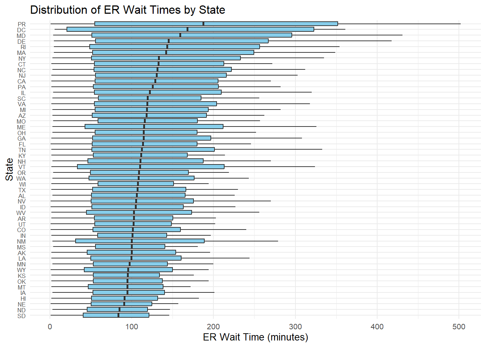
ER wait times vary widely across states, with higher median times observed in jurisdictions like Puerto Rico and DC, and substantial within-state variability in many regions.
Focusing on the top 10 States with the longest wait times (bad)
# Top 10 states by median wait time
top_states <- care_state_er |>
group_by(state) |>
summarise(median_wait = median(score, na.rm = TRUE)) |>
arrange(desc(median_wait)) |>
slice_head(n = 10) |>
pull(state)
care_state_er |>
filter(state %in% top_states) |>
ggplot(aes(x = fct_reorder(state, score, .fun = median), y = score)) +
geom_boxplot(fill = "lightcoral") +
labs(
title = "Top 10 States with Longest ER Wait Times",
x = "State",
y = "ER Wait Time (minutes)"
) +
coord_flip() +
theme_minimal()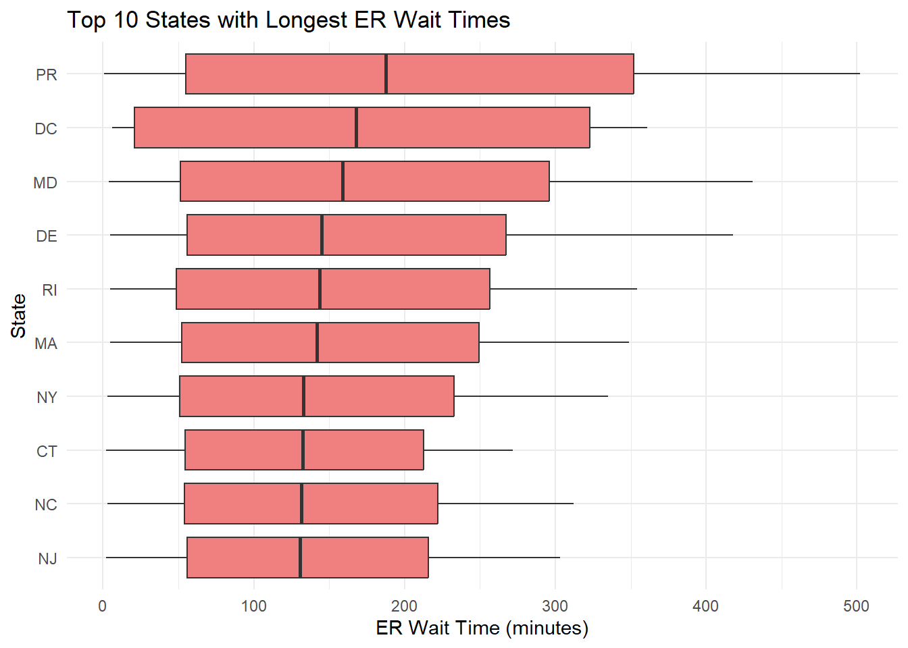
The longest ER wait times are concentrated in the Northeast and Mid-Atlantic regions, with Puerto Rico, DC, and Maryland topping the list and medians often exceeding 250 minutes.
Focusing on the 10 States with the shortest wait times (good)
# Bottom 10 states by median wait time
bottom_states <- care_state_er |>
group_by(state) |>
summarise(median_wait = median(score, na.rm = TRUE)) |>
arrange(median_wait) |>
slice_head(n = 10) |>
pull(state)
care_state_er |>
filter(state %in% bottom_states) |>
ggplot(aes(x = fct_reorder(state, score, .fun = median), y = score)) +
geom_boxplot(fill = "steelblue") +
labs(
title = "Bottom 10 States with Shortest ER Wait Times",
x = "State",
y = "ER Wait Time (minutes)"
) +
coord_flip() +
theme_minimal()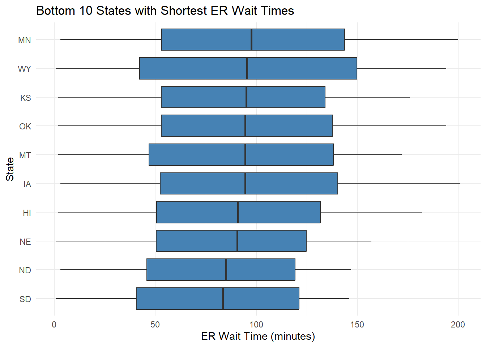
States like South Dakota, North Dakota, and Nebraska show consistently shorter ER wait times, with medians around or below 100 minutes, indicating more efficient throughput or lower volume.
Plot 2: Boxplot by Psychiatric vs. General ER Visits
# Boxplot: psych vs general
care_state_er |>
ggplot(aes(x = is_psych, y = score, fill = is_psych)) +
geom_boxplot() +
scale_fill_manual(values = c("FALSE" = "lightblue", "TRUE" = "lightcoral")) +
labs(
title = "ER Wait Times: General vs Psychiatric Visits",
x = "Psychiatric Visit",
y = "ER Wait Time (minutes)"
) +
theme_minimal()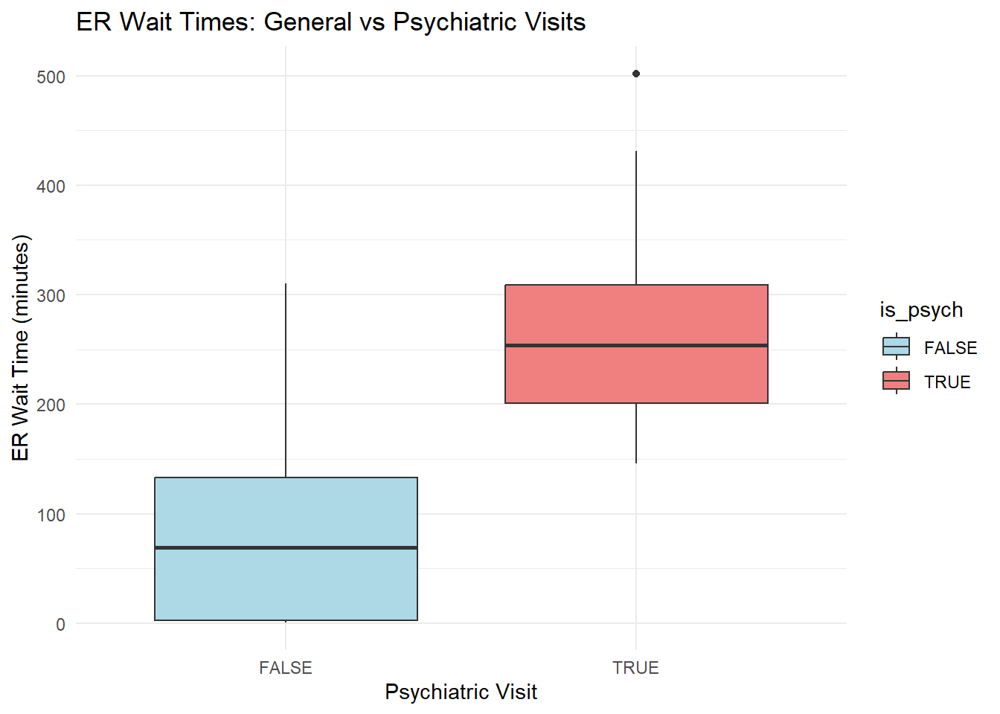
Psychiatric ER visits are associated with substantially longer wait times than general visits, with median delays around 250 minutes compared to less than 100 minutes for general visits.
These findings support our initial Hypotheses: ER wait times vary significantly across U.S. states, and psychiatric visits (vs. general) lead to longer wait times. We would perhaps consider additional plots to break this down in a deeper analysis but these are quite telling. We would probably have plotted the median times on a heatmap of the map with different states.
Outcome: score (ER wait time)
Predictors: state, is_psych
For this analysis to explore the hypotheses We will fit three models: linear regression, LASSO regression, and random forest. We will make use of a 80/20 test train split for our models.
# Preprocessing the data for modeling
care_state_final <- care_state_er |>
select(score, state, is_psych) |>
mutate(
state = factor(state), # Convert 'state' to a factor
is_psych = factor(is_psych, levels = c(FALSE, TRUE)) # Ensure logical factor for is_psych
)
# Train/test split (80/20)
set.seed(123) # Ensuring reproducibility
split <- initial_split(care_state_final, prop = 0.8)
train_data <- training(split)
test_data <- testing(split)
# Cross-validation setup (10-fold)
cv_folds <- vfold_cv(train_data, v = 10)The training set will be used for model fitting and cross-validation, while the test set is reserved for final evaluation of the selected model.
We will test three separate models, a simple linear (lm) model, a LASSO regression and a Random Forest (RF) but will use the same recipe for all models:
# Define a shared preprocessing recipe
score_recipe <- recipe(score ~ state + is_psych, data = train_data) |>
step_dummy(all_nominal_predictors()) |>
step_zv(all_predictors()) |>
step_normalize(all_predictors()) # Normalization for glmnet and good practiceAll three models will use the same recipe to ensure consistent preprocessing. Categorical variables (state and is_psych) are dummy-encoded and scaled, and zero-variance predictors are removed to prevent modeling issues.
####Model 1: Linear regression model:
# Linear regression spec
lm_spec <- linear_reg() |>
set_engine("lm")
# Workflow
lm_workflow <- workflow() |>
add_model(lm_spec) |>
add_recipe(score_recipe)
# Fit with cross-validation
lm_res <- lm_workflow |>
fit_resamples(resamples = cv_folds,
metrics = metric_set(rmse, rsq, mae),
control = control_resamples(save_pred = TRUE))Model 2: LASSO Regression (tuned)
# LASSO regression spec with penalty tuning
lasso_spec <- linear_reg(penalty = tune(), mixture = 1) |> # mixture = 1 => LASSO
set_engine("glmnet")
# Workflow
lasso_workflow <- workflow() |>
add_model(lasso_spec) |>
add_recipe(score_recipe)
# Tune penalty
lasso_res <- tune_grid(
lasso_workflow,
resamples = cv_folds,
grid = 20, # default grid size
metrics = metric_set(rmse, rsq, mae),
control = control_grid(save_pred = TRUE))Warning: package 'glmnet' was built under R version 4.4.3Model 3: Random Forest (basic tuning)
# Random forest spec (default settings for now)
rf_spec <- rand_forest(trees = 500, mtry = tune()) |>
set_engine("ranger") |>
set_mode("regression")
# Workflow
rf_workflow <- workflow() |>
add_model(rf_spec) |>
add_recipe(score_recipe)
# Tune mtry (number of variables to try at each split)
rf_res <- tune_grid(
rf_workflow,
resamples = cv_folds,
grid = 10,
metrics = metric_set(rmse, rsq, mae),
control = control_grid(save_pred = TRUE))i Creating pre-processing data to finalize unknown parameter: mtryWarning: package 'ranger' was built under R version 4.4.3→ A | warning: ! 51 columns were requested but there were 50 predictors in the data.
ℹ 50 predictors will be used.There were issues with some computations A: x1
There were issues with some computations A: x1During model training, some cross-validation folds contained states with no observations (e.g., PR or NY). These resulted in predictors with zero variance, which were safely removed using step_zv().
Assessing models: We collect performance metrics (RMSE, MAE, R²) from each model to evaluate predictive accuracy and fit quality.
# Collect metrics
lm_metrics <- collect_metrics(lm_res) |> mutate(model = "Linear Regression")
lasso_metrics <- collect_metrics(lasso_res) |> mutate(model = "LASSO")
rf_metrics <- collect_metrics(rf_res) |> mutate(model = "Random Forest")
# Combine into one table
all_model_metrics <- bind_rows(lm_metrics, lasso_metrics, rf_metrics)
# View metrics
all_model_metrics# A tibble: 93 × 9
.metric .estimator mean n std_err .config model penalty mtry
<chr> <chr> <dbl> <int> <dbl> <chr> <chr> <dbl> <int>
1 mae standard 78.0 10 3.95 Preprocessor1_… Line… NA NA
2 rmse standard 92.6 10 4.66 Preprocessor1_… Line… NA NA
3 rsq standard 0.319 10 0.0492 Preprocessor1_… Line… NA NA
4 mae standard 77.9 10 3.94 Preprocessor1_… LASSO 1.01e-10 NA
5 rmse standard 92.5 10 4.65 Preprocessor1_… LASSO 1.01e-10 NA
6 rsq standard 0.319 10 0.0495 Preprocessor1_… LASSO 1.01e-10 NA
7 mae standard 77.9 10 3.94 Preprocessor1_… LASSO 6.08e-10 NA
8 rmse standard 92.5 10 4.65 Preprocessor1_… LASSO 6.08e-10 NA
9 rsq standard 0.319 10 0.0495 Preprocessor1_… LASSO 6.08e-10 NA
10 mae standard 77.9 10 3.94 Preprocessor1_… LASSO 2.27e- 9 NA
# ℹ 83 more rowsPlotting performance metrics helps compare models visually across different criteria. Lower RMSE and higher R² indicate better performance.
all_model_metrics |>
filter(.metric %in% c("rmse", "rsq")) |>
group_by(model, .metric) |>
summarise(mean = mean(mean), .groups = "drop") |>
ggplot(aes(x = model, y = mean, fill = model)) +
geom_col(show.legend = FALSE) +
facet_wrap(~ .metric, scales = "free_y") +
labs(
title = "Cross-Validation Performance by Model",
y = "Metric Value",
x = "Model Type"
) +
theme_minimal()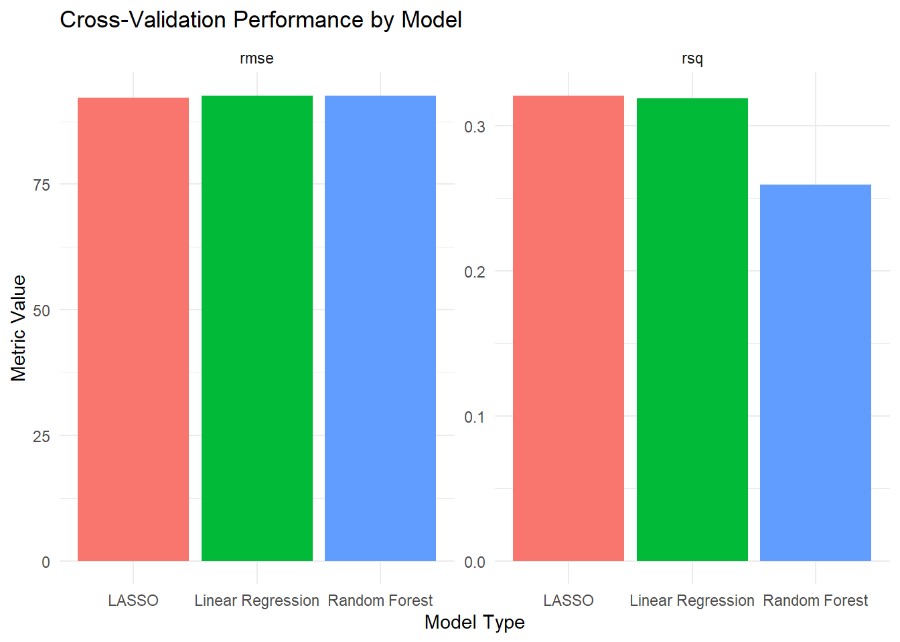
# Collect best RMSE + R^2 per model
model_summary <- all_model_metrics |>
filter(.metric %in% c("rmse", "rsq")) |>
group_by(model, .metric) |>
summarise(mean = min(mean), .groups = "drop") |>
pivot_wider(names_from = .metric, values_from = mean)
model_summary# A tibble: 3 × 3
model rmse rsq
<chr> <dbl> <dbl>
1 LASSO 89.0 0.319
2 Linear Regression 92.6 0.319
3 Random Forest 91.3 0.216LASSO Regression had the lowest RMSE (89.03) and the highest R^2 (0.319), indicating the best balance between accuracy and explanatory power.
Linear Regression performed similarly (RMSE = 92.64, R^2 = 0.319), suggesting that the regularization in LASSO offered only a slight improvement — but still preferable due to its ability to shrink or eliminate weak predictors.
Random Forest, despite being a more flexible non-parametric model performed worse than both linear models (RMSE = 91.32, R^2 = 0.216), this could possibly due to overfitting on a small dataset with mostly categorical predictors.
Based on cross-validation performance, LASSO was the best-performing model, achieving the lowest prediction error and highest variance explained. Its ability to regularize coefficients makes it a robust and interpretable choice for this small but categorical-heavy dataset. Random forest underperformed, likely due to its complexity not being advantageous in this context.
###Assessing on test set
# Finalize, fit, and evaluate best LASSO model on the test set
final_lasso_fit <- lasso_workflow |>
finalize_workflow(select_best(lasso_res, metric = "rmse")) |>
last_fit(split)
# Collect final test set performance metrics
test_metrics <- collect_metrics(final_lasso_fit)
# Preview test predictions (optional)
lasso_test_preds <- collect_predictions(final_lasso_fit)
# Output
test_metrics# A tibble: 2 × 4
.metric .estimator .estimate .config
<chr> <chr> <dbl> <chr>
1 rmse standard 103. Preprocessor1_Model1
2 rsq standard 0.266 Preprocessor1_Model1On the test set, the finalized LASSO model achieved an RMSE of 103.07 and an R^2 of 0.266, indicating slightly reduced performance compared to cross-validation (CV RMSE = 89.03, R^2 = 0.319). This drop suggests a modest degree of overfitting, but overall, the model still retains reasonable predictive ability and generalization to unseen (test) data.
We want to evaluate the effects of state and psych visits as predictors of waiting time.
Looking at the LASSO model, effect of states and psych (is = true).
# Extract coefficients from the finalized LASSO model
lasso_coeffs <- final_lasso_fit |>
extract_workflow() |>
tidy()
# Remove intercept and filter out 0 coefficients (if desired)
lasso_plot_data <- lasso_coeffs |>
filter(term != "(Intercept)") |>
mutate(nonzero = estimate != 0)
# Plot
library(ggplot2)
ggplot(lasso_plot_data, aes(x = reorder(term, estimate), y = estimate, fill = nonzero)) +
geom_col(show.legend = FALSE) +
coord_flip() +
labs(
title = "LASSO Coefficients: ER Wait Time Predictors",
x = "Predictor",
y = "Coefficient Estimate"
) +
scale_fill_manual(values = c("TRUE" = "steelblue", "FALSE" = "lightgray")) +
theme_minimal()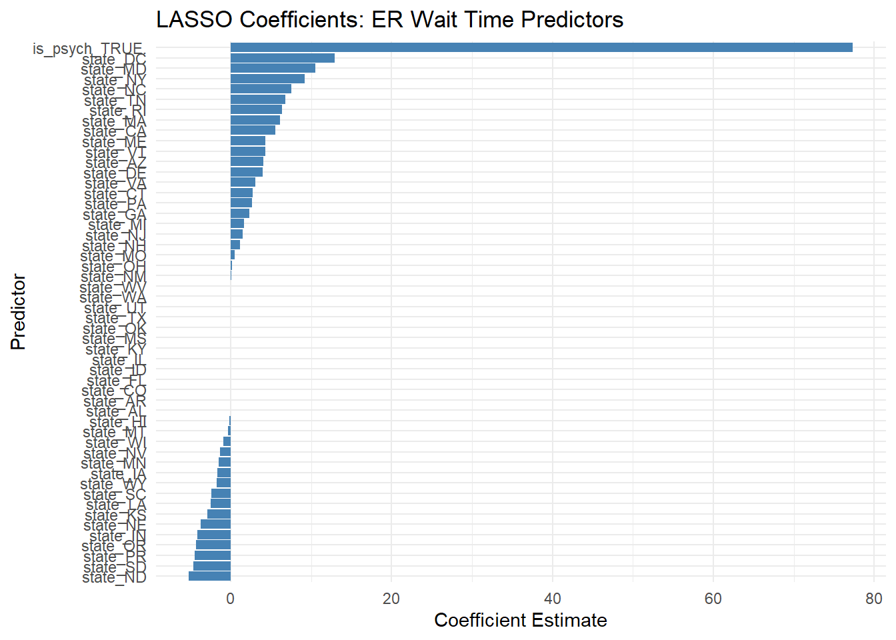
Psych visit is the greatest predictor in the above.
Effect of State on wait time.
# Extract final fitted LASSO model
final_lasso <- extract_fit_parsnip(final_lasso_fit$.workflow[[1]])
# Get coefficient estimates
lasso_coefs <- tidy(final_lasso) |>
filter(term != "(Intercept)")
# Create label for state vs psych
lasso_plot_data <- lasso_coefs |>
mutate(
variable_group = case_when(
str_detect(term, "state_") ~ "State",
str_detect(term, "is_psych") ~ "Visit Type",
TRUE ~ "Other"
),
nonzero = estimate != 0)
# Filter just state predictors
state_effects <- lasso_plot_data |>
filter(variable_group == "State" & nonzero)
ggplot(state_effects, aes(x = "", y = fct_reorder(term, estimate), fill = estimate)) +
geom_tile() +
scale_fill_gradient2(
low = "steelblue", mid = "white", high = "firebrick",
midpoint = 0, name = "Effect on Wait Time"
) +
labs(
title = "States Retained by LASSO: Effect on ER Wait Time",
y = "State",
x = ""
) +
theme_minimal() +
theme(axis.text.x = element_blank())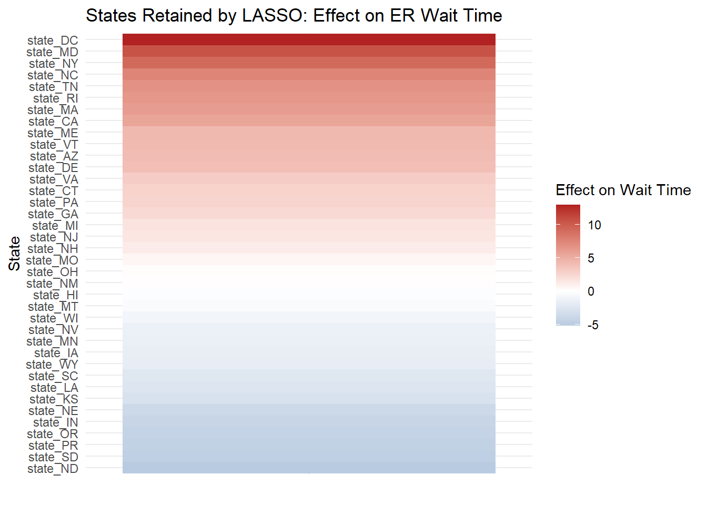
Heatmap exploring effect of state where visit is psych (true) or not (false) across states.
# Summarize the data
heatmap_data <- care_state_er %>%
group_by(state, is_psych) %>%
summarise(mean_score = mean(score, na.rm = TRUE)) %>%
ungroup()`summarise()` has grouped output by 'state'. You can override using the
`.groups` argument.# Generate the heatmap
ggplot(heatmap_data, aes(x = state, y = is_psych, fill = mean_score)) +
geom_tile() +
scale_fill_gradient(low = "white", high = "red") +
labs(title = "Heatmap of Mean ER Wait Times by State and Visit Type", x = "State", y = "Visit Type")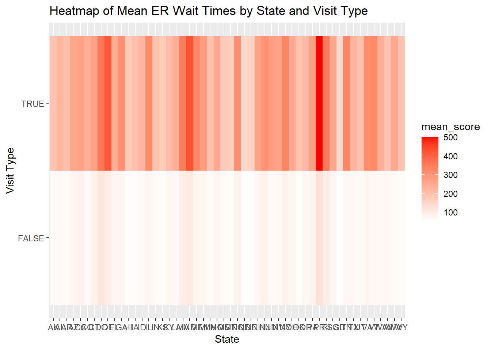
In addition to predictive performance, the models revealed important relationships: psychiatric visits were consistently associated with longer ER wait times, reinforcing disparities seen in the EDA. The inclusion of state as a predictor captured regional variability, though not all states contributed meaningfully — seen by the LASSO model, which selectively retained states with strong effects. These findings suggest both structural geographic variation and an overall delay in psychiatric care.
Thus, LASSO was my favorite model due to the improved performance but also because it is easier to conceptualise and understand and interpret.
Table summary of the ER wait time by State:
# Summary of ER wait times by state
wait_by_state <- care_state_er |>
group_by(state) |>
summarise(
n = n(),
mean_wait = mean(score, na.rm = TRUE),
median_wait = median(score, na.rm = TRUE),
sd_wait = sd(score, na.rm = TRUE)
) |>
arrange(desc(mean_wait))
# View
gt(wait_by_state)| state | n | mean_wait | median_wait | sd_wait |
|---|---|---|---|---|
| PR | 4 | 219.50 | 187.5 | 227.90129 |
| MD | 4 | 188.25 | 159.0 | 192.79933 |
| DE | 4 | 178.25 | 145.0 | 182.64241 |
| DC | 4 | 175.75 | 168.0 | 185.81420 |
| RI | 4 | 161.50 | 143.5 | 158.27929 |
| MA | 4 | 159.50 | 142.0 | 154.21306 |
| NY | 4 | 151.00 | 133.0 | 147.33183 |
| NC | 4 | 144.50 | 131.5 | 136.30481 |
| IL | 4 | 142.00 | 122.0 | 137.51364 |
| NJ | 4 | 141.50 | 130.5 | 131.86989 |
| TN | 4 | 140.00 | 112.5 | 143.48751 |
| ME | 4 | 139.75 | 115.0 | 143.26752 |
| VA | 4 | 139.50 | 119.0 | 136.65894 |
| VT | 4 | 136.50 | 110.0 | 145.33066 |
| CT | 4 | 134.75 | 132.5 | 120.81770 |
| GA | 4 | 134.75 | 114.5 | 132.41192 |
| PA | 4 | 133.75 | 125.5 | 123.33255 |
| CA | 4 | 132.25 | 128.5 | 118.50281 |
| MI | 4 | 130.50 | 118.5 | 120.60542 |
| AZ | 4 | 125.25 | 118.0 | 113.65261 |
| SC | 4 | 124.50 | 119.5 | 108.85617 |
| NH | 4 | 123.50 | 110.5 | 117.21917 |
| MO | 4 | 123.25 | 116.0 | 108.40779 |
| OH | 4 | 121.00 | 114.5 | 107.41508 |
| NM | 4 | 120.50 | 100.0 | 124.80785 |
| NV | 4 | 120.50 | 105.5 | 115.53499 |
| FL | 4 | 118.50 | 113.5 | 106.57235 |
| WA | 4 | 115.75 | 108.5 | 105.12017 |
| WV | 4 | 115.75 | 102.5 | 110.67181 |
| TX | 4 | 111.50 | 107.0 | 98.25307 |
| LA | 4 | 111.25 | 99.5 | 103.40656 |
| CO | 4 | 111.00 | 101.5 | 101.49877 |
| AL | 4 | 110.25 | 106.0 | 96.57251 |
| OR | 4 | 110.25 | 109.0 | 94.85208 |
| KY | 4 | 109.75 | 111.5 | 92.96729 |
| ID | 4 | 109.50 | 105.0 | 97.22311 |
| WI | 4 | 102.75 | 107.5 | 82.18424 |
| AR | 4 | 102.50 | 102.5 | 85.75352 |
| UT | 4 | 101.75 | 102.0 | 85.40638 |
| IN | 4 | 100.25 | 101.0 | 81.98933 |
| AK | 4 | 99.50 | 100.0 | 85.67185 |
| MN | 4 | 99.50 | 97.5 | 83.53243 |
| IA | 4 | 98.25 | 94.5 | 83.58379 |
| WY | 4 | 96.50 | 95.5 | 85.14497 |
| MS | 4 | 96.25 | 100.0 | 75.67199 |
| OK | 4 | 96.25 | 94.5 | 80.92126 |
| KS | 4 | 92.00 | 95.0 | 73.99099 |
| HI | 4 | 91.50 | 91.0 | 76.05480 |
| MT | 4 | 90.75 | 94.5 | 74.42838 |
| NE | 4 | 84.75 | 90.5 | 66.84497 |
| ND | 4 | 80.00 | 85.0 | 62.49800 |
| SD | 4 | 78.50 | 83.5 | 64.16905 |
wait_by_state <- care_state_er |>
group_by(state) |>
summarise(
mean_wait = mean(score, na.rm = TRUE),
median_wait = median(score, na.rm = TRUE),
sd_wait = sd(score, na.rm = TRUE),
.groups = "drop"
) |>
mutate(
rank = rank(-mean_wait), # Higher mean = higher rank
mean_wait = round(mean_wait, 1),
median_wait = round(median_wait, 1),
sd_wait = round(sd_wait, 1),
rank = as.integer(rank)
) |>
arrange(desc(mean_wait)) |>
select(rank, state, mean_wait, median_wait, sd_wait)
# Render table
wait_by_state |>
gt() |>
cols_label(
rank = "Rank",
mean_wait = "Mean Wait (min)",
median_wait = "Median Wait (min)",
sd_wait = "SD (min)"
) |>
tab_header(title = "Summary of ER Wait Times by State") |>
fmt_number(columns = c(mean_wait, median_wait, sd_wait), decimals = 1)| Summary of ER Wait Times by State | ||||
|---|---|---|---|---|
| Rank | state | Mean Wait (min) | Median Wait (min) | SD (min) |
| 1 | PR | 219.5 | 187.5 | 227.9 |
| 2 | MD | 188.2 | 159.0 | 192.8 |
| 3 | DE | 178.2 | 145.0 | 182.6 |
| 4 | DC | 175.8 | 168.0 | 185.8 |
| 5 | RI | 161.5 | 143.5 | 158.3 |
| 6 | MA | 159.5 | 142.0 | 154.2 |
| 7 | NY | 151.0 | 133.0 | 147.3 |
| 8 | NC | 144.5 | 131.5 | 136.3 |
| 9 | IL | 142.0 | 122.0 | 137.5 |
| 10 | NJ | 141.5 | 130.5 | 131.9 |
| 11 | TN | 140.0 | 112.5 | 143.5 |
| 12 | ME | 139.8 | 115.0 | 143.3 |
| 13 | VA | 139.5 | 119.0 | 136.7 |
| 14 | VT | 136.5 | 110.0 | 145.3 |
| 15 | CT | 134.8 | 132.5 | 120.8 |
| 15 | GA | 134.8 | 114.5 | 132.4 |
| 17 | PA | 133.8 | 125.5 | 123.3 |
| 18 | CA | 132.2 | 128.5 | 118.5 |
| 19 | MI | 130.5 | 118.5 | 120.6 |
| 20 | AZ | 125.2 | 118.0 | 113.7 |
| 21 | SC | 124.5 | 119.5 | 108.9 |
| 22 | NH | 123.5 | 110.5 | 117.2 |
| 23 | MO | 123.2 | 116.0 | 108.4 |
| 24 | OH | 121.0 | 114.5 | 107.4 |
| 25 | NM | 120.5 | 100.0 | 124.8 |
| 25 | NV | 120.5 | 105.5 | 115.5 |
| 27 | FL | 118.5 | 113.5 | 106.6 |
| 28 | WA | 115.8 | 108.5 | 105.1 |
| 28 | WV | 115.8 | 102.5 | 110.7 |
| 30 | TX | 111.5 | 107.0 | 98.3 |
| 31 | LA | 111.2 | 99.5 | 103.4 |
| 32 | CO | 111.0 | 101.5 | 101.5 |
| 33 | AL | 110.2 | 106.0 | 96.6 |
| 33 | OR | 110.2 | 109.0 | 94.9 |
| 35 | KY | 109.8 | 111.5 | 93.0 |
| 36 | ID | 109.5 | 105.0 | 97.2 |
| 37 | WI | 102.8 | 107.5 | 82.2 |
| 38 | AR | 102.5 | 102.5 | 85.8 |
| 39 | UT | 101.8 | 102.0 | 85.4 |
| 40 | IN | 100.2 | 101.0 | 82.0 |
| 41 | AK | 99.5 | 100.0 | 85.7 |
| 41 | MN | 99.5 | 97.5 | 83.5 |
| 43 | IA | 98.2 | 94.5 | 83.6 |
| 44 | WY | 96.5 | 95.5 | 85.1 |
| 45 | MS | 96.2 | 100.0 | 75.7 |
| 45 | OK | 96.2 | 94.5 | 80.9 |
| 47 | KS | 92.0 | 95.0 | 74.0 |
| 48 | HI | 91.5 | 91.0 | 76.1 |
| 49 | MT | 90.8 | 94.5 | 74.4 |
| 50 | NE | 84.8 | 90.5 | 66.8 |
| 51 | ND | 80.0 | 85.0 | 62.5 |
| 52 | SD | 78.5 | 83.5 | 64.2 |
# Top 10 states
top_10_states <- wait_by_state |> slice_min(rank, n = 10)
# Bottom 10 states
bottom_10_states <- wait_by_state |> slice_max(rank, n = 10)
# Display top 10 in a nice table
gt(top_10_states) |>
cols_label(
mean_wait = "Mean Wait (min)",
median_wait = "Median Wait (min)",
sd_wait = "SD (min)",
rank = "Rank"
) |>
tab_header(title = "Top 10 States with Longest ER Wait Times") |>
fmt_number(columns = c(mean_wait, median_wait, sd_wait), decimals = 1)| Top 10 States with Longest ER Wait Times | ||||
|---|---|---|---|---|
| Rank | state | Mean Wait (min) | Median Wait (min) | SD (min) |
| 1 | PR | 219.5 | 187.5 | 227.9 |
| 2 | MD | 188.2 | 159.0 | 192.8 |
| 3 | DE | 178.2 | 145.0 | 182.6 |
| 4 | DC | 175.8 | 168.0 | 185.8 |
| 5 | RI | 161.5 | 143.5 | 158.3 |
| 6 | MA | 159.5 | 142.0 | 154.2 |
| 7 | NY | 151.0 | 133.0 | 147.3 |
| 8 | NC | 144.5 | 131.5 | 136.3 |
| 9 | IL | 142.0 | 122.0 | 137.5 |
| 10 | NJ | 141.5 | 130.5 | 131.9 |
# Display bottom 10 in a nice table
gt(bottom_10_states) |>
cols_label(
mean_wait = "Mean Wait (min)",
median_wait = "Median Wait (min)",
sd_wait = "SD (min)",
rank = "Rank"
) |>
tab_header(title = "Bottom 10 States with Shortest ER Wait Times") |>
fmt_number(columns = c(mean_wait, median_wait, sd_wait), decimals = 1)| Bottom 10 States with Shortest ER Wait Times | ||||
|---|---|---|---|---|
| Rank | state | Mean Wait (min) | Median Wait (min) | SD (min) |
| 52 | SD | 78.5 | 83.5 | 64.2 |
| 51 | ND | 80.0 | 85.0 | 62.5 |
| 50 | NE | 84.8 | 90.5 | 66.8 |
| 49 | MT | 90.8 | 94.5 | 74.4 |
| 48 | HI | 91.5 | 91.0 | 76.1 |
| 47 | KS | 92.0 | 95.0 | 74.0 |
| 45 | MS | 96.2 | 100.0 | 75.7 |
| 45 | OK | 96.2 | 94.5 | 80.9 |
| 44 | WY | 96.5 | 95.5 | 85.1 |
| 43 | IA | 98.2 | 94.5 | 83.6 |
We clearly see big differences between the performance between States and wait times in different States with the worst (highest) median wait time being 218 minutes, and the best (shortest) median wait time.
# Compare ER wait times between general and psychiatric visits
wait_by_psych <- care_state_er |>
group_by(is_psych) |>
summarise(
n = n(),
mean_wait = mean(score, na.rm = TRUE),
median_wait = median(score, na.rm = TRUE),
sd_wait = sd(score, na.rm = TRUE),
.groups = "drop"
) |>
mutate(
visit_type = if_else(is_psych, "Psychiatric", "General"),
mean_wait = round(mean_wait, 1),
median_wait = round(median_wait, 1),
sd_wait = round(sd_wait, 1)
) |>
select(visit_type, n, mean_wait, median_wait, sd_wait)
# Produce and present table
gt(wait_by_psych) |>
cols_label(
visit_type = "Visit Type",
n = "n",
mean_wait = "Mean Wait (min)",
median_wait = "Median Wait (min)",
sd_wait = "SD (min)"
) |>
tab_header(title = "ER Wait Times: Psychiatric vs. General Visits") |>
fmt_number(columns = c(mean_wait, median_wait, sd_wait), decimals = 1)| ER Wait Times: Psychiatric vs. General Visits | ||||
|---|---|---|---|---|
| Visit Type | n | Mean Wait (min) | Median Wait (min) | SD (min) |
| General | 156 | 76.8 | 69.0 | 70.0 |
| Psychiatric | 52 | 260.2 | 254.0 | 74.3 |
Even though there were significantly fewer psychiatric visits reported, we see a significant difference in the wait time between these and general ER visits. With the general ER visits have a mean of 76.8 and median of 69 minutes, while psychiatric visits had a mean of 260.2 and median of 254 minutes.
This analysis investigated factors influencing emergency room (ER) wait times across the United States, with a focus on state-level variation and differences between general and psychiatric visits. Through exploratory visualizations and statistical modeling, we confirmed that ER wait times vary widely by state and that psychiatric visits are associated with substantially longer wait times — approximately 77 minutes longer on average, as estimated by the LASSO model. Three models were trained and evaluated using cross-validation, with LASSO regression selected for its balance of interpretability and predictive performance (CV RMSE ≈ 89, R² ≈ 0.32). The final model performed similarly on the test set (RMSE ≈ 103, R² ≈ 0.27), supporting its generalizability. These findings align with the initial hypotheses.